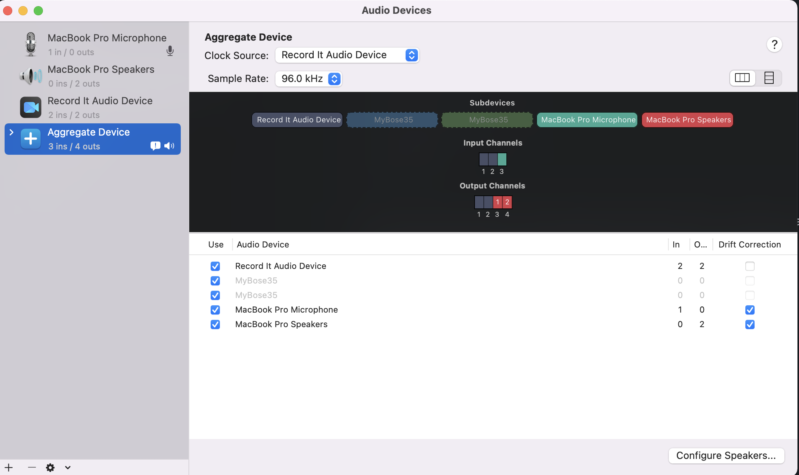

1. Making a screencast
This post shows how to make a livecoding screencast using free OSX technologies.
1.1 Using QuickTime and RecordIt
Capturing system audio and screen-recording your live coding performance can be done in multiple ways. Here's a method based on Apple's Quicktime and an audio plugin that is part of a third-party software, Record It.
Note: both of these software components are free. The Record It Audio Device which is a free extension that enables you to capture system sounds on your Mac. It acts as a virtual audio input device and sends the sound from music, videos, and system alerts that you would normally hear through your speakers to the input cha
1.1.1 Recording a screencast: steps
- Get the Record It audio plugin PS this is a free audio extension, even if it is part of a paid-for software (RecordItAudioDevice.pkg)
- Install it by right-clicking on app and selecting 'Open...' to avoid the permissions issue
- On AudioMidi Setup, Create an Aggregate Device to combine multiple audio interfaces
- Increase sample rate to 96hz, if necessary (Ensure it's done before opening LIVE)
- Open Quicktime and set it to record your screen, making sure you get audio from the RecordIt audio plugin
- Set your DAW (eg Ableton Live) to output audio to RecordIt
- Set your computer to output sound to the Aggregate Device (so that you can also hear what's going on e.g. if you are using headsets)
DONE!

1.1.2 Post-processing tips
Often the audio I get from a Quicktime screencast recording is rather weak.
I found an easy way to fix that by using iMovie, which normally comes with any Mac. Here are the steps:
- Open the livecoding screencast in iMovie
- Detach Audio (right-click on movie bar to see the options menu)
- Adjust the volume in the audio track editor, by dragging the mouse up/down (avoid red zones!)
- Additionally, you can try using the top left menu:
Music Settings > Equalizer > Music Enhance
- Additionally, you can try using the top left menu:
- Save the new movie:
Share > File- Resolution: 720p 60
- Quality: High
- Compress: Faster
Results: For a 10 mins video, that gives me a .mp4 file of ~250M
Upload to YouTube and off you go ;-)
1.2 Using Screenflick (legacy)
Legacy method
This method requires a license from Screenflick

https://www.araelium.com/support/screenflick
Official docs:
- When you start a recording with system audio turned on, Screenflick switches the system-wide default audio output device to the "Soundflower" virtual audio device, which Screenflick then uses as an input to record audio from.
- Some programs unfortunately will play all audio over a specific output device determined when the application launched rather than always using the current system setting which can lead to problems like this.
- What needs to happen is the program playing audio needs to decide that it should play that audio to the Soundflower device, rather than your speakers. There are two ways this can happen.
- Launch the program which plays the audio after you start a Screenflick recording. (The system output device will be Soundflower and the program will therefore use it.)
- Before starting the program, go into System Preferences and change the system output audio device to "Soundflower (2ch)" manually, start the program which will play audio, and then start the recording in Screenflick when you're ready. (After the recording ends, don't forget to change the system output device back to your speakers.) [BEST]
- A third option which doesn't always exist, is that the program playing audio may have a preference setting for which audio device to play audio to. Check the program's preferences just in case. If it does have a setting, set it to "Soundflower (2ch)" while recording.
1.2.1 My own tips
- Frame rate:
FPS 15- Seems to lead to less MIDI delays
- Frames not an issue cause it's just screen recording
- Then export to QuickTime
- Audio
128 Kbps - All other options default
- Changing framerate seem to have no effect